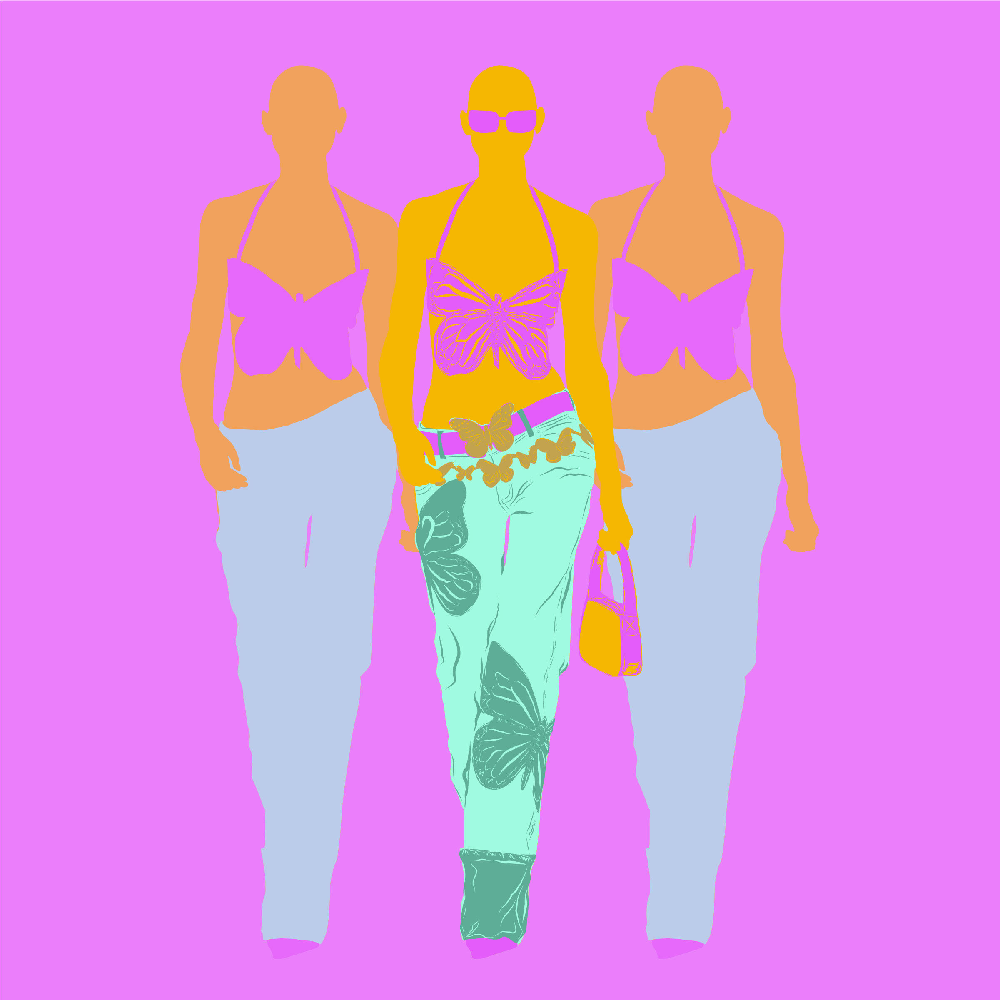
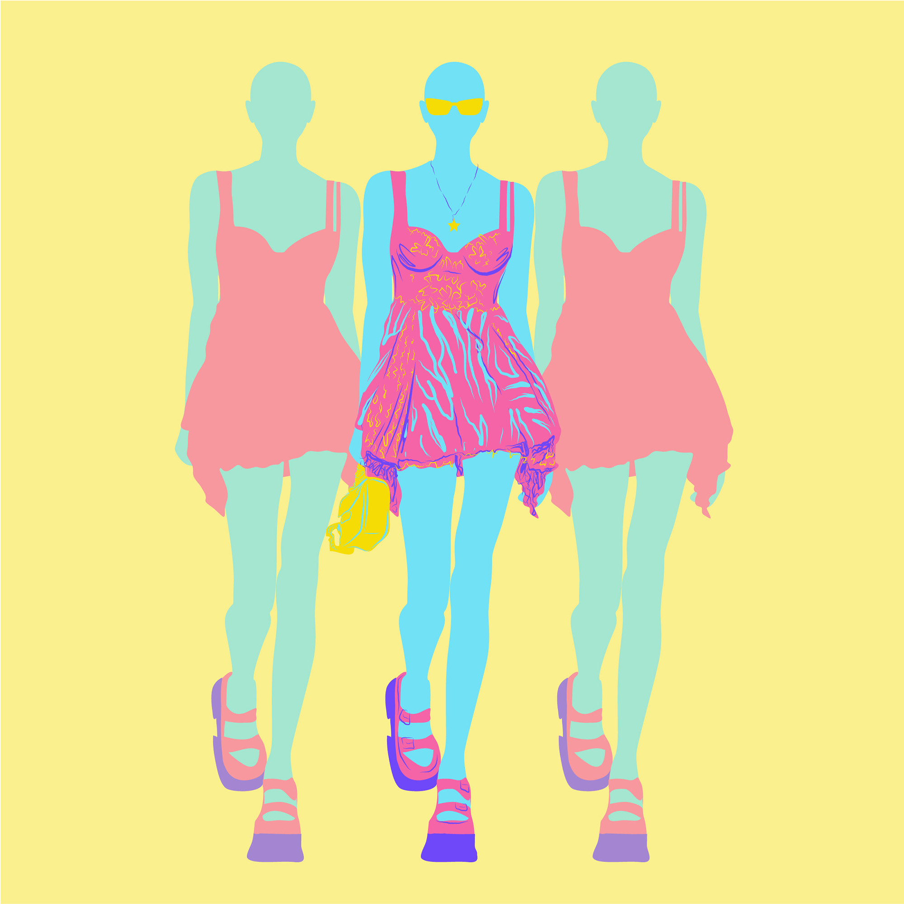
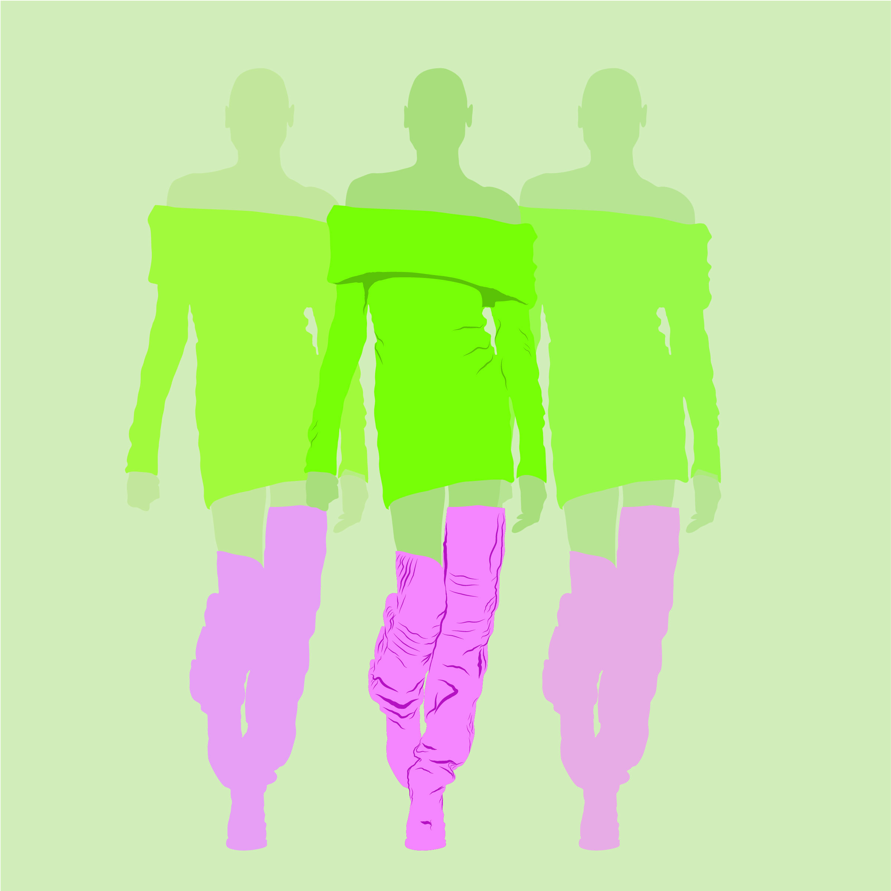

Color Schemes



This project centers on exploring advanced color schemes in Adobe Illustrator, particularly the triad and double split complementary models. Through this creative endeavor, we will delve into the harmonious juxtaposition of colors, guiding us in crafting visually striking compositions. Leveraging these intricate models, we will study their interplay, learn how to balance contrasting and complementary hues, and create captivating visual narratives. The outcome will not only expand our understanding of color theory but also equip us with the skills to apply these sophisticated palettes to digital and print design, enhancing our ability to evoke diverse emotions and moods through color.